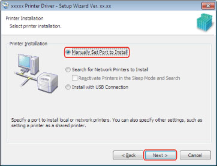
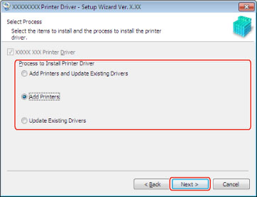
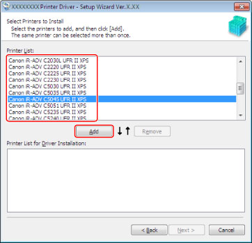
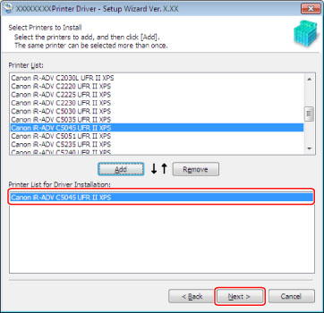
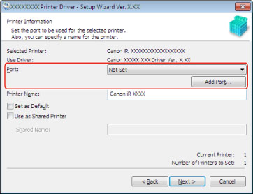
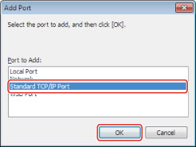
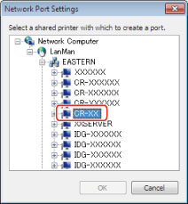
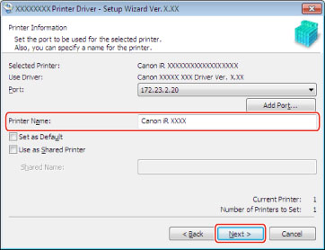
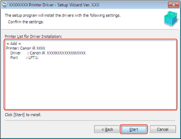

Port Setting Installation
For a device connected to a network or locally, set the port to be used, then install the driver. As well as using existing ports, you can also add Standard TCP/IP ports or network printer ports.
|
IMPORTANT
|
|
Be sure to log on as a member of Administrators when you start the computer.
|
|
NOTE
|
If you are using a device connected to a network using TCP/IP protocol, you can automatically search for a port to install the driver. For instructions, see " Network Connection." |
Start the installer → follow the instructions on the screen.
For details, see steps 1 to 3 of "
Network Connection."
Select [Manually Set Port to Install] → click [Next].

Select any required items → Click [Next].

[UFRII XPS Printer Driver]: Select the driver to be installed.
[Process to Install Printer Driver]: This is displayed if there are already drivers installed. Select a process to apply to existing drivers if necessary.
Select the devices you want to install from [Printer List] → click [Add].

Verify that the device you selected in step
4. has been added to
[Printer List for Driver Installation] → click [Next].

To delete a device from the list, select the device → click [Remove].
Select a port.

If more than one device is selected, this dialog box will reappear to enable selection of different ports for other devices.
|
NOTE
|
If you do not know how to set ports, select a temporary port ([LPT1] etc.) from [Port], then click [Next] and proceed to step 7.. You can set the correct port after the installation has finished (see " Changing a Standard TCP/IP Port"). |
If you want to add a Standard TCP/IP port
Click [Add Port].
Select [Standard TCP/IP Port] in the [Add Port] dialog box → click [OK].

Click [Next] in the [Add Standard TCP/IP Printer Port Wizard].
Enter the name of the device or its IP address in [Printer Name or IP Address] (or [Hostname or IP address]) → click [Next].
For the name of the device, use the name by which the device is known on the network.
[Port Name] is automatically entered. Change the port name if required.
If the [Additional Port Information Required] (or [Additional port information required]) dialog box is displayed, follow one of the procedures below.
Return to the previous screen in the wizard → re-enter the information for [Printer Name or IP Address] (or [Hostname or IP address]) → click [Next].
Select [Standard] for [Device Type] → [Canon Network Printing Device with P9100] from the drop-down list → click [Next].
Click [Finish] → proceed to step
7..
|
NOTE
|
|
If you do not know the device name or IP address, contact your network administrator.
The type of device you select from the [Standard] drop-down list under [Device Type] in the [Additional Port Information Required] (or [Additional port information required]) dialog box depends on the printer model you are using, and may differ from the above setting.
|
If you want to add a network printer port
Click [Add Port].
Select [Network] in the [Add Port] dialog box → click [OK].
Select the network printer to use → click [OK] → proceed to step
7..

If you want to use an existing port
Select a port from [Port] → proceed to step
7..
Change [Printer Name] if required → select [Set as Default] to set the device as the default device → click [Next].

If you want to specify shared printer settings, select [Use as Shared Printer] (see "
Print Server Settings").
If you have added a network printer port in step
6., you cannot set [Printer Name] and
[Use as Shared Printer].Verify [Printer List for Driver Installation] → click [Start].

Click [Exit] (or [Restart]).
The installed device(s) are displayed in [Devices and Printers] (or [Printers and Faxes] or [Printers]) in the Windows Control Panel.
The driver is now installed.